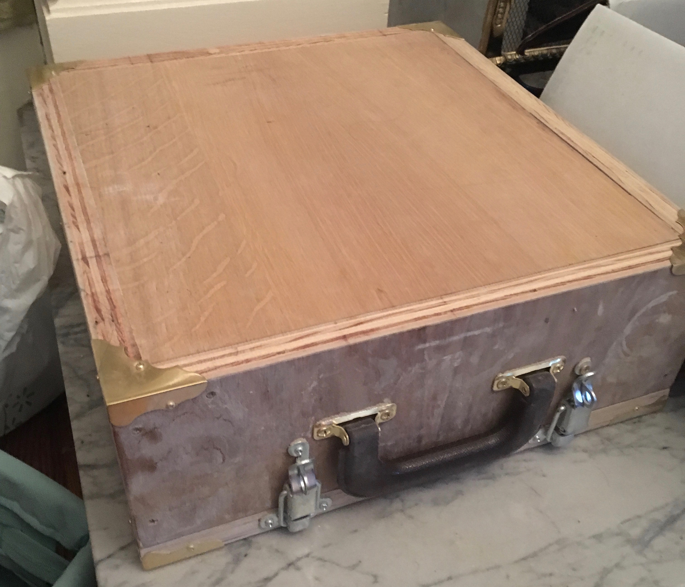
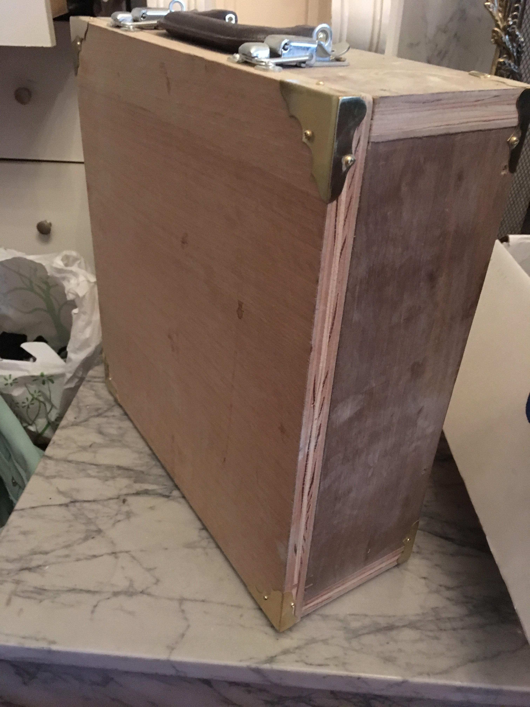
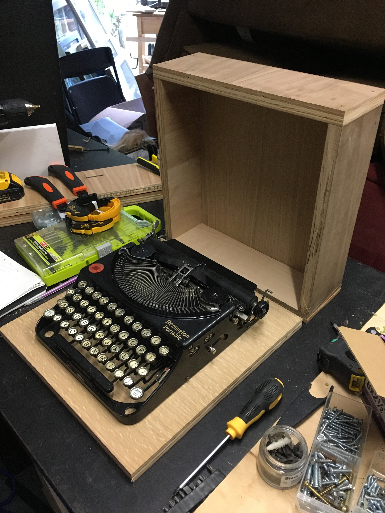
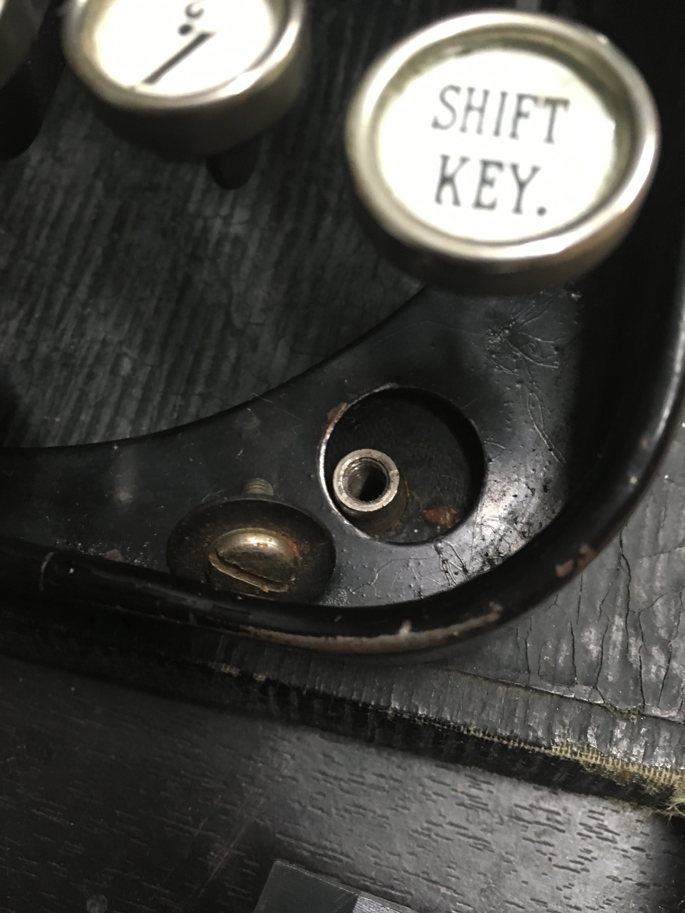
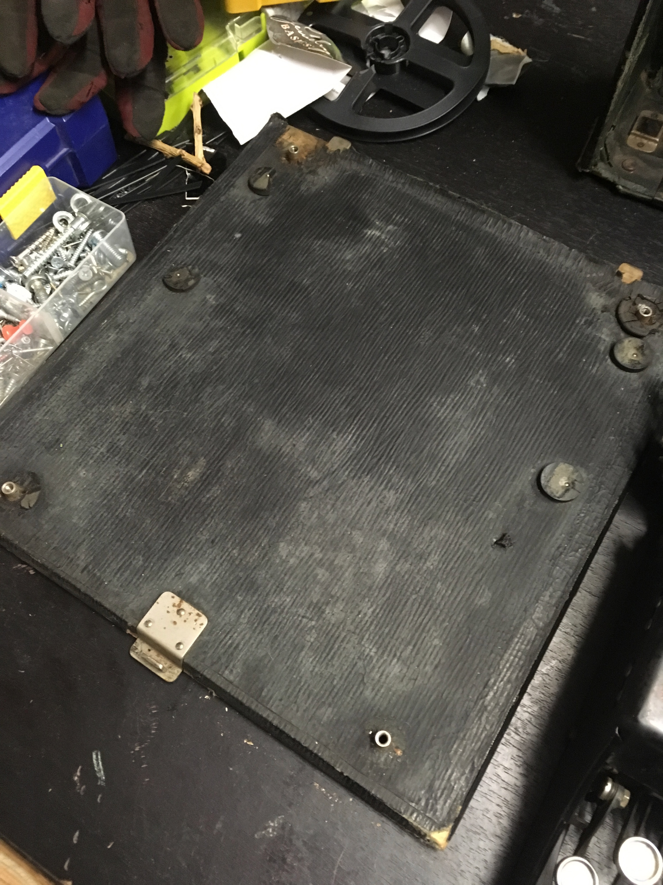
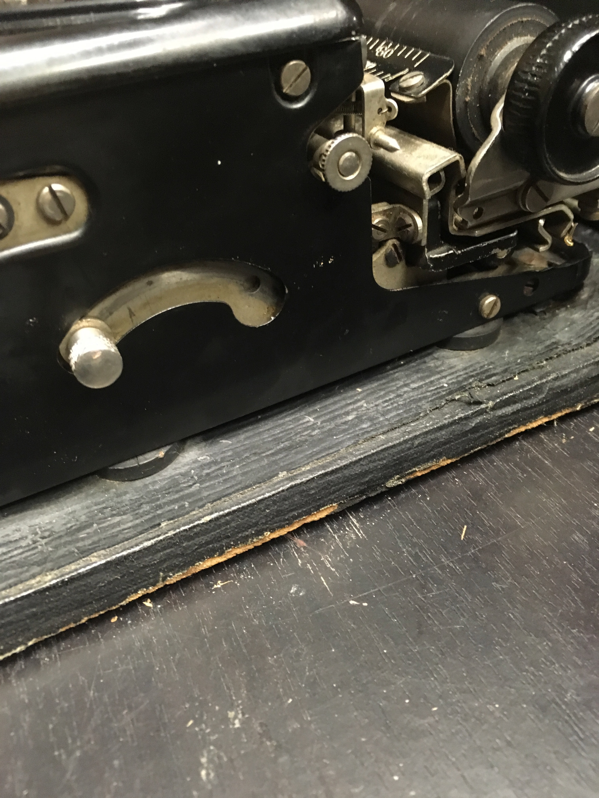

Typewriter Case
August, 2018
I'll come back and write more here later - just a brief overview for now.
I got a 1925 Remington Typewriter as part of a shtick for Burning Man. (I was a newspaper reporter, with a satirical page à la Onion, and filled in people's personal stories with the typewriter as I met folks walking around.) Practically speaking, I needed to be able to carry the thing around for several hours at a time. And despite being marketed as a "portable" version (true, relatively speaking, compared to the other behemoth models available at the time), it was still quite heavy. More importantly, the machine's original case was worn out, the handle was broken, and it would have let in all kinds of dust and grime. It's also fairly fragile, so risked damage without a new case.
As you can see, I went for the classic briefcase look. The design is fairly simple, although there were a few constraints that made thinking through the design a bit tricky. For one, it needs to be easily accessible. It needs to allow the carriage (the cylindrical thing that moves the paper as you type) to travel freely without bumping into wooden edges. It also needs to allow the hands easy access to the keyboard. The original case actually came apart into two pieces when being used, but I preferred to have a hinged version that would keep the edges neatly aligned at all times. Finally, I was going to be lugging this thing around Black Rock City, a place with dust that is notoriously alkaline and thus bad for metals of all kinds. So I wanted to be sure that the case closed very firmly, keeping the machine as clean as possible.
I decided to have the top be a box with five sides, with the bottom a hinged addition that would complete the prism and enclose the typewriter. So that it would close easily, the top part lays down snug on top of the square base, rather than fitting around a square base. The top had four sides (two longer, two shorter) attached to a small square with wood screws. Screws rather than glue because the whole thing was fairly heavy, and strength was important.
  As you can see above, the typewriter was attached to its original case with screws, and padded with rubber washers. I basically did the same thing. I found rubber washers of various sizes at the hardware store, along with metal washers larger than the size of the holes so that it would be as snug as possible. (This is vague, sorry - more detail later.) Basically, on top of the base, I sandwiched rubber washer, typewriter, rubber washer, metal washer, then screw. Using multiple levels of rubber washers keeps the paint of the machine from being chipped by the metal washer.
The next touch was a thin layer of scrap wood nailed into the base so that when the top closed, there would be a lip at the crack that formed a barrier against dust or other debris. I also laid a thin strip of foam where the top would meet the bottom, so that it would close gently and form a further seal.
Hinges, handle, latches, and the brass corner decorations were all actually quite easy - they're all sold in the same aisle of the hardware store, so it's just a matter of buying them and screwing/nailing them in. I was especially happy to find the corner decorations. They were the difference between it looking like a quite amateur project and something somewhat more refined.
You can see all of these hastily-described features in the video below!